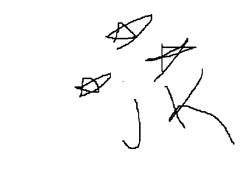

1-Galatasaray
Galatasaray ligimizin en büyük takımıdır. Galatasaray Spor Kulübü'ne ait olan Galatasaray Sportif Anonim Şirketi, kulübün futbol takımının sahibidir. Galatasaray Spor Kulübü'nün 1997 yılında şirketleşme sürecine girmesinin ardından kurulmuştur. Hisselerinin %55,03'ü Galatasaray Spor Kulübü Derneğine aittir, %44,96'sı ise Borsa İstanbul'da halka açıktır.
- Kurucusu : Ali Sami Yen
- Stadyum Adı : Nef Stadyumu
2-Fenerbahçe
Fenerbahçe ligimizin en büyük ikinci takımıdır. Kulübün futbol dışında faaliyet gösterdiği diğer spor dalları basketbol, voleybol, atletizm, boks, kürek, yelken, yüzme ve masa tenisi'dir. Takım, iç saha maçlarını İstanbul Kadıköy'de bulunan 50.530 kişilik Fenerbahçe Şükrü Saracoğlu Stadyumu'nda yapmaktadır.
- Kurucusu : Şükrü Saraçoğlu
- Stadyum Adı : Ülker Stadyumu

3- Jimnastik Kulübü
ligimizin ismi okunamayan takımıdır. 1903 yılında Bereket Jimnastik Kulübü (Asıl Çerkesçe ismi Bereketiqo olup bazı kurucuların mensup olduğu Çerkes sülalesinden gelmektedir, Türkçeye Bereket olarak çevrilmiştir.
- Kurucusu : bilmiyom
- Stadyum Adı : Vodafone Park mıydı neydi? 
4-Hamsispor
Hamsispor ligimizin en laz takımıdır. Özellikle futbol şubesiyle tanınan kulüp, profesyonel futbol ligleri tarihinde şampiyon olan 6 kulüpten biri ve şampiyon olmayı başaran ilk Anadolu kulübüdür.
- Kurucusu : Berat Albayrak
- Stadyum Adı : Akyazı Stadyumu
![Hamsispor]()